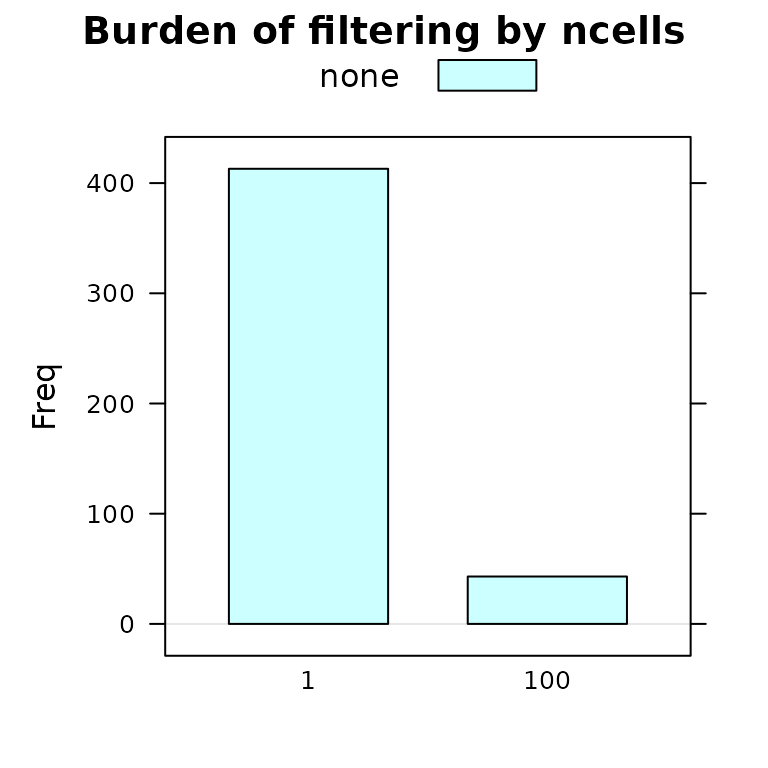
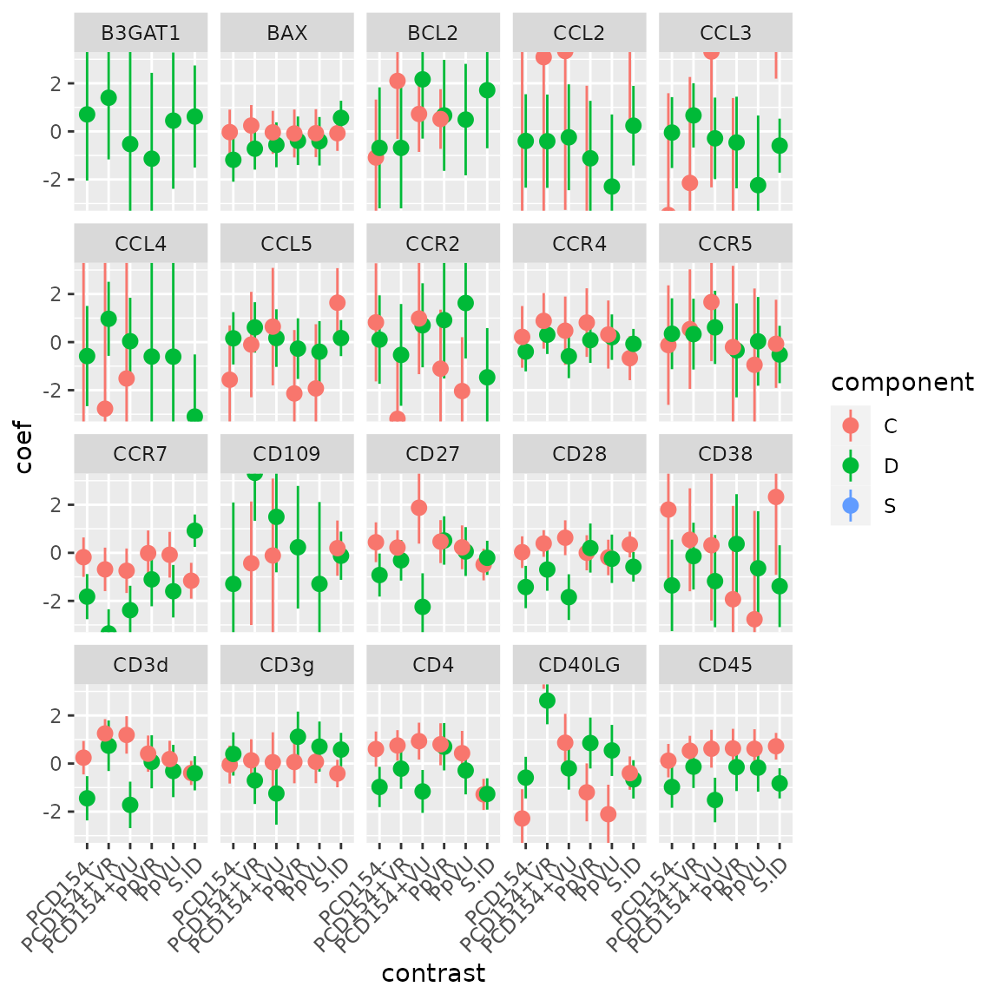

MAST is an R/Bioconductor package for managing and analyzing qPCR and sequencing-based single-cell gene expression data, as well as data from other types of single-cell assays. Our goal is to support assays that have multiple features (genes, markers, etc) per well (cell, etc) in a flexible manner. Assays are assumed to be mostly complete in the sense that most wells contain measurements for all features.
A SingleCellAssay object can be manipulated as a matrix, with rows giving features and columns giving cells. It derives from http://bioconductor.org/packages/release/bioc/html/SingleCellExperiment.html.
Apart from reading and storing single-cell assay data, the package also provides functionality for significance testing of differential expression using a Hurdle model, gene set enrichment, facilities for visualizing patterns in residuals indicative of differential expression, and more.
There is also some facilities for inferring background thresholds, and filtering of individual outlier wells/libraries. These methods are described our papers, McDavid et al. (2014) , McDavid et al. (2013) , Finak et al. (2015) , McDavid, Finak, and Gottardo (2016) .
With the cursory background out of the way, we’ll proceed with some examples to help understand how the package is used.
Data can be imported in a Fluidigm instrument-specific format (the details of which are undocumented, and likely subject-to-change) or some derived, annotated format, or in “long” (melted) format, in which each row is a measurement, so if there are \(N\) wells and \(M\) cells, then the data.frame should contain \(N \times M\) rows.
For example, the following data set was provided in as a comma-separated value file. It has the cycle threshold (\(ct\)) recorded. Non-detected genes are recorded as NAs. For the Fluidigm/qPCR single cell expression functions to work as expected, we must use the expression threshold, defined as \(et = c_{\mbox{max}} - ct\), which is proportional to the log-expression.
Below, we load the package and the data, then compute the expression threshold from the \(ct\), and construct a FluidigmAssay.
## [1] "Sample.ID" "Subject.ID" "Experiment.Number"
## [4] "Chip.Number" "Stim.Condition" "Time"
## [7] "Population" "Number.of.Cells" "Well"
## [10] "Gene" "Ct"
vbeta <- computeEtFromCt(vbeta)
vbeta.fa <- FromFlatDF(vbeta, idvars=c("Subject.ID", "Chip.Number", "Well"),
primerid='Gene', measurement='Et', ncells='Number.of.Cells',
geneid="Gene", cellvars=c('Number.of.Cells', 'Population'),
phenovars=c('Stim.Condition','Time'), id='vbeta all', class='FluidigmAssay')## No dimnames in `exprsArray`, assuming `fData` and `cData` are sorted according to `exprsArray`## Assuming data assay in position 1, with name Et is log-transformed.
print(vbeta.fa)## class: FluidigmAssay
## dim: 75 456
## metadata(0):
## assays(1): Et
## rownames(75): B3GAT1 BAX ... TNFRSF9 TNFSF10
## rowData names(2): Gene primerid
## colnames(456): Sub01 1 A01 Sub01 1 A02 ... Sub02 3 H10 Sub02 3 H11
## colData names(9): Number.of.Cells Population ... Time wellKey
## reducedDimNames(0):
## mainExpName: NULL
## altExpNames(0):We see that the variable vbeta is a data.frame from which we construct the FluidigmAssay object. The idvars is the set of column(s) in vbeta that uniquely identify a well (globally), the primerid is a column(s) that specify the feature measured at this well. The measurement gives the column name containing the log-expression measurement, ncells contains the number of cells (or other normalizing factor) for the well. geneid, cellvars, phenovars all specify additional columns to be included in the rowData, and colData. The output is a FluidigmAssay object with wells and features.
We can access the feature-level metadata and the cell-level metadata using the rowData and colData accessors.
head(rowData(vbeta.fa),3)## DataFrame with 3 rows and 2 columns
## Gene primerid
## <character> <character>
## B3GAT1 B3GAT1 B3GAT1
## BAX BAX BAX
## BCL2 BCL2 BCL2
head(colData(vbeta.fa),3)## DataFrame with 3 rows and 9 columns
## Number.of.Cells Population ncells Subject.ID
## <integer> <character> <integer> <factor>
## Sub01 1 A01 1 CD154+VbetaResponsive 1 Sub01
## Sub01 1 A02 1 CD154+VbetaResponsive 1 Sub01
## Sub01 1 A03 1 CD154+VbetaResponsive 1 Sub01
## Chip.Number Well Stim.Condition Time wellKey
## <integer> <character> <character> <factor> <character>
## Sub01 1 A01 1 A01 Stim(SEB) 12 Sub01 1 A01
## Sub01 1 A02 1 A02 Stim(SEB) 12 Sub01 1 A02
## Sub01 1 A03 1 A03 Stim(SEB) 12 Sub01 1 A03Data can also be imported in matrix format using command FromMatrix, and passing a matrix of expression values and DataFrame coercible cell and feature data.
It’s possible to subset SingleCellAssay objects by wells and features. Square brackets (“[”) will index on the first index (features) and by features on the second index (cells). Integer and boolean and indices may be used, as well as character vectors naming the wellKey or the feature (via the primerid). There is also a subset method, which will evaluate its argument in the frame of the colData, hence will subset by wells.
sub1 <- vbeta.fa[,1:10]
show(sub1)## class: FluidigmAssay
## dim: 75 10
## metadata(0):
## assays(1): Et
## rownames(75): B3GAT1 BAX ... TNFRSF9 TNFSF10
## rowData names(2): Gene primerid
## colnames(10): Sub01 1 A01 Sub01 1 A02 ... Sub01 1 A09 Sub01 1 A10
## colData names(9): Number.of.Cells Population ... Time wellKey
## reducedDimNames(0):
## mainExpName: NULL
## altExpNames(0):## class: FluidigmAssay
## dim: 75 5
## metadata(0):
## assays(1): Et
## rownames(75): B3GAT1 BAX ... TNFRSF9 TNFSF10
## rowData names(2): Gene primerid
## colnames(5): Sub01 1 A01 Sub01 2 A01 Sub02 1 A01 Sub02 2 A01 Sub02 3
## A01
## colData names(9): Number.of.Cells Population ... Time wellKey
## reducedDimNames(0):
## mainExpName: NULL
## altExpNames(0):
sub3 <- vbeta.fa[6:10, 1:10]
show(sub3)## class: FluidigmAssay
## dim: 5 10
## metadata(0):
## assays(1): Et
## rownames(5): CCL4 CCL5 CCR2 CCR4 CCR5
## rowData names(2): Gene primerid
## colnames(10): Sub01 1 A01 Sub01 1 A02 ... Sub01 1 A09 Sub01 1 A10
## colData names(9): Number.of.Cells Population ... Time wellKey
## reducedDimNames(0):
## mainExpName: NULL
## altExpNames(0):The colData and rowData DataFrames are subset accordingly as well.
A SingleCellAssay may be split into a list of SingleCellAssay. The split method takes an argument which names the column (factor) on which to split the data. Each level of the factor will be placed in its own SingleCellAssay within the list.
## $Sub01
## class: FluidigmAssay
## dim: 75 177
## metadata(0):
## assays(1): Et
## rownames(75): B3GAT1 BAX ... TNFRSF9 TNFSF10
## rowData names(2): Gene primerid
## colnames(177): Sub01 1 A01 Sub01 1 A02 ... Sub01 2 H09 Sub01 2 H10
## colData names(9): Number.of.Cells Population ... Time wellKey
## reducedDimNames(0):
## mainExpName: NULL
## altExpNames(0):
##
## $Sub02
## class: FluidigmAssay
## dim: 75 279
## metadata(0):
## assays(1): Et
## rownames(75): B3GAT1 BAX ... TNFRSF9 TNFSF10
## rowData names(2): Gene primerid
## colnames(279): Sub02 1 A01 Sub02 1 A02 ... Sub02 3 H10 Sub02 3 H11
## colData names(9): Number.of.Cells Population ... Time wellKey
## reducedDimNames(0):
## mainExpName: NULL
## altExpNames(0):The splitting variable can either be a character vector naming column(s) of the SingleCellAssay, or may be a factor or list of factors.
It’s possible to combine SingleCellAssay objects with the cbind method.
## class: FluidigmAssay
## dim: 75 456
## metadata(0):
## assays(1): Et
## rownames(75): B3GAT1 BAX ... TNFRSF9 TNFSF10
## rowData names(2): Gene primerid
## colnames(456): Sub01 1 A01 Sub01 1 A02 ... Sub02 3 H10 Sub02 3 H11
## colData names(9): Number.of.Cells Population ... Time wellKey
## reducedDimNames(0):
## mainExpName: NULL
## altExpNames(0):We can filter and perform some significance tests on the SingleCellAssay. We may want to filter any wells with at least two outlier cells where the discrete and continuous parts of the signal are at least 9 standard deviations from the mean. This is a very conservative filtering criteria. We’ll group the filtering by the number of cells.
We’ll split the assay by the number of cells and look at the concordance plot after filtering.
vbeta.split<-split(vbeta.fa,"Number.of.Cells")
#see default parameters for plotSCAConcordance
plotSCAConcordance(vbeta.split[[1]],vbeta.split[[2]],
filterCriteria=list(nOutlier = 1, sigmaContinuous = 9,
sigmaProportion = 9))## Using primerid as id variables
## Using primerid as id variables
## Using primerid as id variables
## Using primerid as id variables## Sum of Squares before Filtering: 14.89
## After filtering: 12.41
## Difference: 2.48The filtering function has several other options, including whether the filter shuld be applied (thus returning a new SingleCellAssay object) or returned as a matrix of boolean values.
vbeta.fa## class: FluidigmAssay
## dim: 75 456
## metadata(0):
## assays(1): Et
## rownames(75): B3GAT1 BAX ... TNFRSF9 TNFSF10
## rowData names(2): Gene primerid
## colnames(456): Sub01 1 A01 Sub01 1 A02 ... Sub02 3 H10 Sub02 3 H11
## colData names(9): Number.of.Cells Population ... Time wellKey
## reducedDimNames(0):
## mainExpName: NULL
## altExpNames(0):
## Split by 'ncells', apply to each component, then recombine
vbeta.filtered <- mast_filter(vbeta.fa, groups='ncells')
## Returned as boolean matrix
was.filtered <- mast_filter(vbeta.fa, apply_filter=FALSE)
## Wells filtered for being discrete outliers
head(subset(was.filtered, pctout))## intout null pctout
## Sub01 1 D05 FALSE TRUE TRUE
## Sub01 1 D06 FALSE TRUE TRUE
## Sub01 1 D07 FALSE TRUE TRUE
## Sub01 1 D08 FALSE TRUE TRUE
## Sub01 1 D10 FALSE TRUE TRUE
## Sub01 1 D11 FALSE TRUE TRUEThere’s also some functionality for visualizing the filtering.
burdenOfFiltering(vbeta.fa, 'ncells', byGroup=TRUE)
There are two frameworks available in the package. The first framework zlm offers a full linear model to allow arbitrary comparisons and adjustment for covariates. The second framework LRT can be considered essentially performing t-tests (respecting the discrete/continuous nature of the data) between pairs of groups. LRT is subsumed by the first framework, but might be simpler for some users, so has been kept in the package.
We’ll describe zlm. Models are specified in terms of the variable used as the measure and covariates present in the colData using symbolic notation, just as the lm function in R.
vbeta.1 <- subset(vbeta.fa, ncells==1)
## Consider the first 20 genes
vbeta.1 <- vbeta.1[1:20,]
head(colData(vbeta.1))## DataFrame with 6 rows and 9 columns
## Number.of.Cells Population ncells Subject.ID
## <integer> <character> <integer> <factor>
## Sub01 1 A01 1 CD154+VbetaResponsive 1 Sub01
## Sub01 1 A02 1 CD154+VbetaResponsive 1 Sub01
## Sub01 1 A03 1 CD154+VbetaResponsive 1 Sub01
## Sub01 1 A04 1 CD154+VbetaResponsive 1 Sub01
## Sub01 1 A05 1 CD154+VbetaResponsive 1 Sub01
## Sub01 1 A06 1 CD154+VbetaResponsive 1 Sub01
## Chip.Number Well Stim.Condition Time wellKey
## <integer> <character> <character> <factor> <character>
## Sub01 1 A01 1 A01 Stim(SEB) 12 Sub01 1 A01
## Sub01 1 A02 1 A02 Stim(SEB) 12 Sub01 1 A02
## Sub01 1 A03 1 A03 Stim(SEB) 12 Sub01 1 A03
## Sub01 1 A04 1 A04 Stim(SEB) 12 Sub01 1 A04
## Sub01 1 A05 1 A05 Stim(SEB) 12 Sub01 1 A05
## Sub01 1 A06 1 A06 Stim(SEB) 12 Sub01 1 A06Now, for each gene, we can regress on Et the factors Population and Subject.ID.
In each gene, we’ll fit a Hurdle model with a separate intercept for each population and subject. A an S4 object of class “ZlmFit” is returned, containing slots with the genewise coefficients, variance-covariance matrices, etc.
## Fitted zlm on 20 genes and 413 cells.
## Using BayesGLMlike ~ Population + Subject.ID
## returns a data.table with a summary of the fit
coefAndCI <- summary(zlm.output, logFC=FALSE)$datatable
coefAndCI <- coefAndCI[contrast != '(Intercept)',]
coefAndCI[,contrast:=abbreviate(contrast)]
ggplot(coefAndCI, aes(x=contrast, y=coef, ymin=ci.lo, ymax=ci.hi, col=component))+
geom_pointrange(position=position_dodge(width=.5)) +facet_wrap(~primerid) +
theme(axis.text.x=element_text(angle=45, hjust=1)) + coord_cartesian(ylim=c(-3, 3))
Try ?ZlmFit-class or showMethods(classes='ZlmFit') to see a full list of methods. Multicore support is offered by setting options(mc.cores=4), or however many cores your system has.
The combined test for differences in proportion expression/average expression is found by calling a likelihood ratio test on the fitted object. An array of genes, metrics and test types is returned. We’ll plot the -log10 P values by gene and test type.
zlm.lr <- lrTest(zlm.output, 'Population')## Refitting on reduced model...##
## Done!
dimnames(zlm.lr)## $primerid
## [1] "B3GAT1" "BAX" "BCL2" "CCL2" "CCL3" "CCL4" "CCL5" "CCR2"
## [9] "CCR4" "CCR5" "CCR7" "CD109" "CD27" "CD28" "CD38" "CD3d"
## [17] "CD3g" "CD4" "CD40LG" "CD45"
##
## $test.type
## [1] "cont" "disc" "hurdle"
##
## $metric
## [1] "lambda" "df" "Pr(>Chisq)"
pvalue <- ggplot(melt(zlm.lr[,,'Pr(>Chisq)']), aes(x=primerid, y=-log10(value)))+
geom_bar(stat='identity')+facet_wrap(~test.type) + coord_flip()## Warning in melt(zlm.lr[, , "Pr(>Chisq)"]): The melt generic in data.table has
## been passed a matrix and will attempt to redirect to the relevant reshape2
## method; please note that reshape2 is deprecated, and this redirection is now
## deprecated as well. To continue using melt methods from reshape2 while both
## libraries are attached, e.g. melt.list, you can prepend the namespace like
## reshape2::melt(zlm.lr[, , "Pr(>Chisq)"]). In the next version, this warning will
## become an error.
print(pvalue)In fact, the zlm framework is quite general, and has wrappers for a variety of modeling functions that accept glm-like arguments to be used, such as mixed models (using lme4).
library(lme4)
lmer.output <- zlm(~ Stim.Condition +(1|Subject.ID), vbeta.1, method='glmer', ebayes=FALSE)By default, we employ Bayesian logistic regression, which imposes a Cauchy prior of the regression coefficients, for the discrete component. This provides reasonable inference under linear separation. We default to regular least squares for the continuous component with an empirical Bayes’ adjustment for the dispersion (variance) estimate. However, the prior can be adjusted (see defaultPrior) or eliminated entirely by setting method='glm' in zlm. It is also possible to use Bayesian linear regression for the continuous component by setting useContinuousBayes=TRUE in zlm. For example:
orig_results <- zlm(~Stim.Condition, vbeta.1)
dp <- defaultPrior('Stim.ConditionUnstim')
new_results <- zlm(~Stim.Condition, vbeta.1, useContinuousBayes=TRUE,coefPrior=dp)
qplot(x=coef(orig_results, 'C')[, 'Stim.ConditionUnstim'],
y=coef(new_results, 'C')[, 'Stim.ConditionUnstim'],
color=coef(new_results, 'D')[,'(Intercept)']) +
xlab('Default prior') + ylab('Informative Prior') +
geom_abline(slope=1, lty=2) + scale_color_continuous('Baseline\nlog odds\nof expression')After applying a prior to the continuous component, its estimates are shrunken towards zero, with the amount of shrinkage inversely depending on the number of expressing cells in the gene.
Another way to test for differential expression is available through the LRT function, which is analogous to two-sample T tests.
## Population test.type primerid lrstat direction p.value
## 1 CD154-VbetaResponsive comb B3GAT1 1.5722257 -1 0.4556124
## 2 CD154-VbetaResponsive comb BAX 1.5847859 1 0.4527601
## 3 CD154-VbetaResponsive comb BCL2 0.7821003 -1 0.6763462
## 4 CD154-VbetaResponsive comb CCL2 3.3431031 -1 0.1879552
## 5 CD154-VbetaResponsive comb CCL3 0.1401862 -1 0.9323070
## 6 CD154-VbetaResponsive comb CCL4 0.6305951 1 0.7295718Here we compare each population (CD154-VbetaResponsive, CD154-VbetaUnresponsive CD154+VbetaUnresponsive, VbetaResponsive, VbetaUnresponsive) to the CD154+VbetaResponsive population. The Population column shows which population is being compared, while test.type is comb for the combined normal theory/binomial test. Column primerid gives the gene being tested, direction shows if the comparison group mean is greater (1) or less (-1) than the referent group, and lrtstat and p.value give the test statistic and \(\chi^2\) p-value (two degrees of freedom). Other options are whether additional information about the tests are returned (returnall=TRUE) and if the testing should be stratified by a character vector naming columns in colData containing grouping variables (groups).
These tests have been subsumed by zlm but remain in the package for user convenience.
In RNA-sequencing data is essentially no different than qPCR-based single cell gene expression, once it has been aligned and mapped, if one is willing to reduce the experiment to counts or count-like data for a fixed set of genes/features.
We assume that suitable tools (eg, RSEM, Kallisto or TopHat) have been applied to do this.
An example of this use is provided in a vignette. Type vignette('MAITAnalysis') to view.
Here we provide some background on the implementation of the package.
We derive from SingleCellExperiment, which is provides an array-like object to store tabular data that might have multiple derived representations. On construction of a SingleCellAssay object with FromFlatDF, the package tests for completeness, and will fill in the missing data (with NA) if it is not. The FromMatrix and SceToSingleCellAssay constructors do not do anything special for missing values, though these are not typically expected in scRNAseq data.
Finak, Greg, Andrew McDavid, Masanao Yajima, Jingyuan Deng, Vivian Gersuk, Alex K Shalek, Chloe K Slichter, et al. 2015. “MAST: A Flexible Statistical Framework for Assessing Transcriptional Changes and Characterizing Heterogeneity in Single-Cell RNA Sequencing Data.” Genome Biol. 16 (1): 1–13.
McDavid, Andrew, Lucas Dennis, Patrick Danaher, Greg Finak, Michael Krouse, Alice Wang, Philippa Webster, Joseph Beechem, and Raphael Gottardo. 2014. “Modeling Bi-Modality Improves Characterization of Cell Cycle on Gene Expression in Single Cells.” Edited by Sheng Zhong. PLoS Comput. Biol. 10 (7): e1003696.
McDavid, Andrew, Greg Finak, Pratip K Chattopadyay, Maria Dominguez, Laurie Lamoreaux, Steven S Ma, Mario Roederer, and Raphael Gottardo. 2013. “Data Exploration, Quality Control and Testing in Single-Cell qPCR-based Gene Expression Experiments.” Bioinformatics 29 (4): 461–67.
McDavid, Andrew, Greg Finak, and Raphael Gottardo. 2016. “The Contribution of Cell Cycle to Heterogeneity in Single-Cell RNA-seq Data.” Nat. Biotechnol. 34 (6): 591–93.